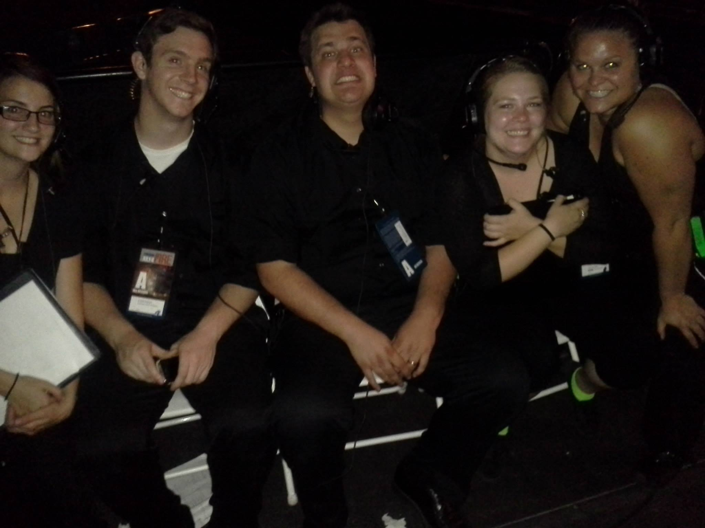
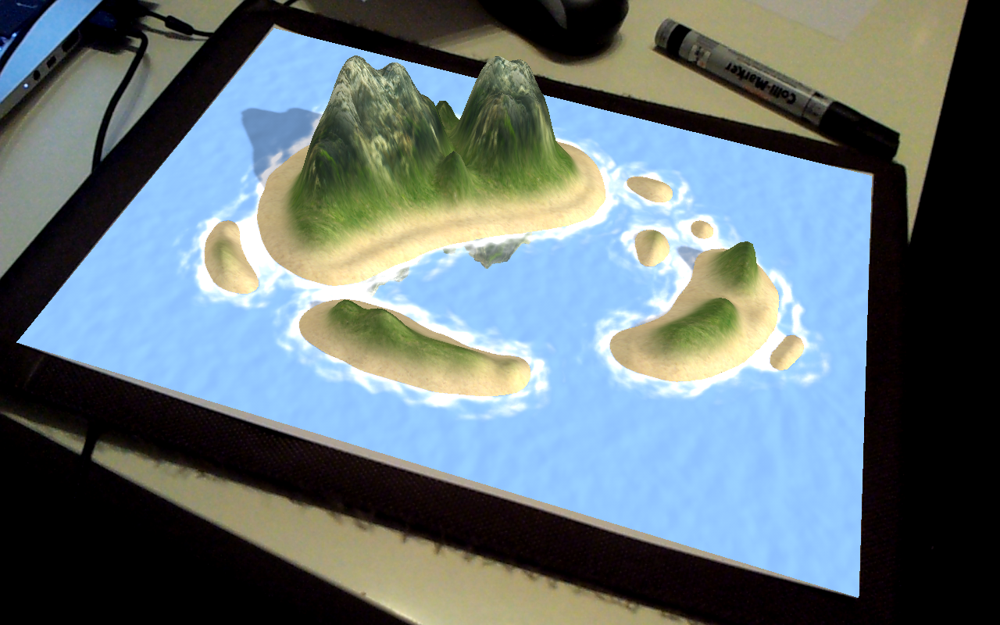
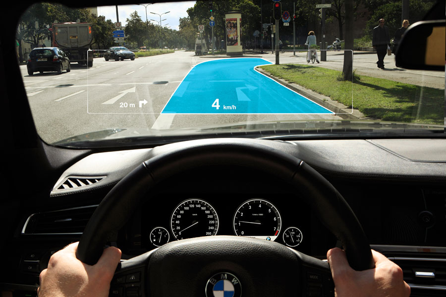
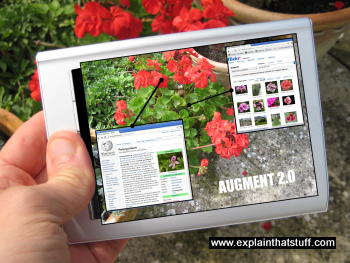

I've been an Assistant Stage Manager for Baruch Gayton Entertainment for 8 years.
|

I am one who enjoys games. Any kind of game.
But my favorite games are the ones that my family and I
play around the table on Sunday nights.
That's why one of the projects I'm hoping to produce,
is a line of AR (Augmented Reality) tabletop games.
The options are limitless:
- Stratego
- Risk
- Settlers of Catan
- Card Games
- Even Dungeons and Dragons!
In an age where technology runs our lives,
I for one would love to see it bring our families back together,
instead of texting each other in the same room and never speaking.

I am a very progressive thinking person.
What are some of the needs I see,
and what can I do to fill them?
I often drive to places I've never been to,
and luckily my phone has navigation.
But!
There's no good place for me to put my phone while I drive
and still be safe while I look at the directions.
I either have to put my phone in my cup holder,
or on the seat next to me.
This is where AR (Augmented Reality) comes in.
Using Google Maps and a special pane loaded into your windshield
You're able to view your directions
in a safe and comfortable method,
while still being able to keep your eyes perfectly on the road.
|

One of the projects I am hoping to accomplish
is an AR (Augmented Reality) app for identifying plants.
All too often I have been hiking or even just walking
in my own neighborhood, and seen a tree or flower
that I thought was just so beautiful,
and I wanted to know more about it.
But how do I Google this tree?
How is Yahoo supposed to know what flower I found behind my house?
Exactly.
So not only would this app identify the plant,
but it would also tell you where it is indigenous
and some common uses and facts about it. |